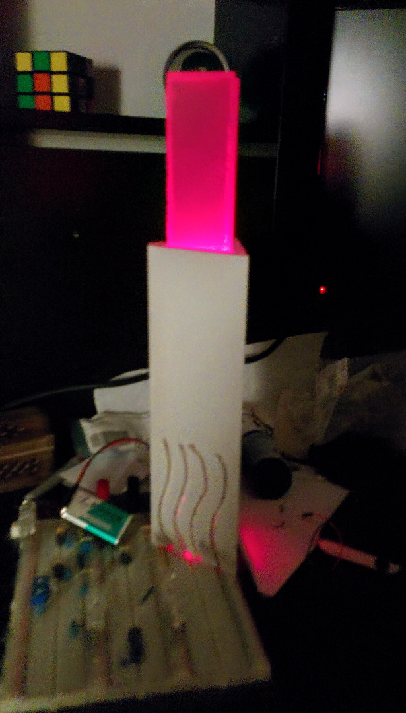
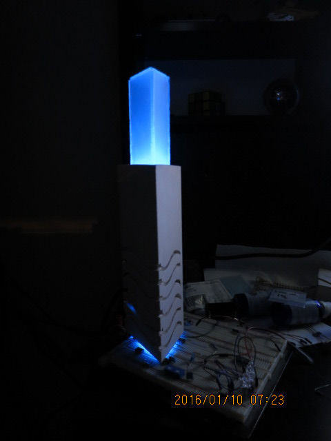

Some random information.


"Had! The manifestation of Nuit. The unveiling of the company of heaven. Every man and every woman is a star. Every number is infinite. There is no difference. Help me, O warrior lord of Thebes, in my unveiling before the children of men! Be thou Hadit, my secret centre, my heart and my toungue! Behold! It is revealed by Aiwass the minister of Hoor-paar-kraat. The Khabs is in the khu, not the khu in the khabs. Worship then the Khabs, and behold my light shed over you! Let my servants be few and secret: they shall rule the many and the known. These are fools that men adore; both their Gods and their men are fools. Come forth, O children, under the stars, and take your fill of love!"
Do what thou wilt!